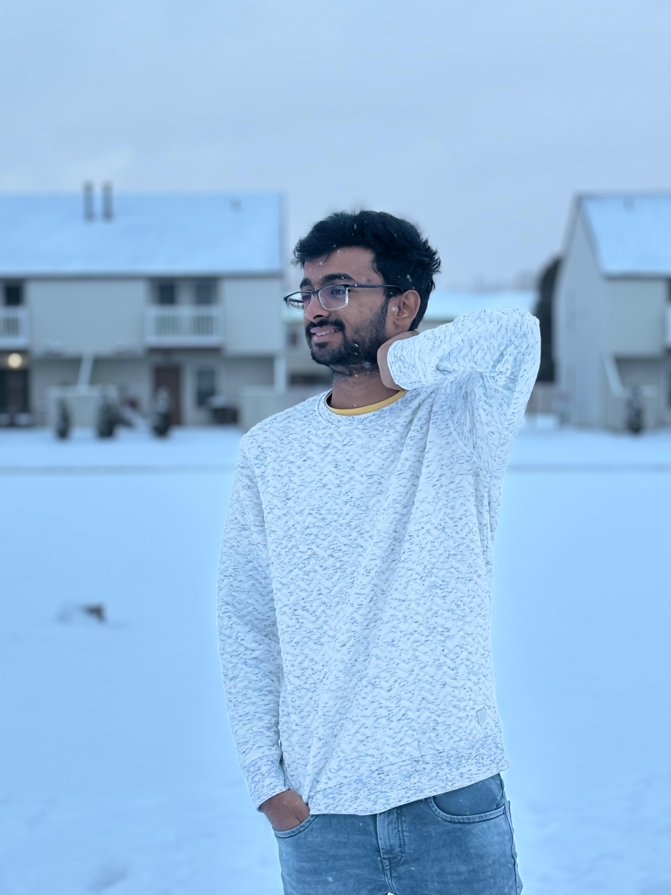

About Me

ROHITH CHANUMOLU
I am Rohith Chanumolu, a passionate individual who recently completed my undergraduation at Gurunanak Institutions Technical Campus, located in Hyderabad, INDIA. Currently, I am pursuing masters in computer science at Kent State University. Coming from such technical background, I have solid knowledge base in programming languages such as Java, Python, etc. In addition, I am fond of playing outdoor sports such as cricket, badminton, etc. I am always eager to connect with like-minded individuals and explore opportunities for collaboration and growth.